Introduction
I have a very large collection of plants and although I love them all the same, some of my favourites are the GreenHills Boxwood, Mini Jade, Juniper and Ficus Microcarpa. Growing up my mom worked at a greenhouse and she always brought home plants, eventually after a few years our house became a jungle and I gained a huge appreciation for plants.
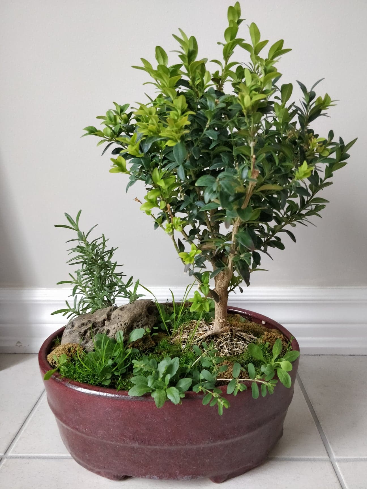 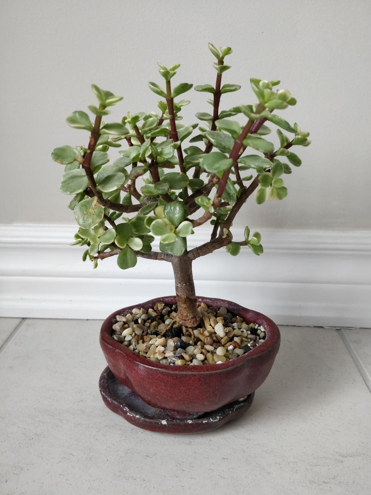 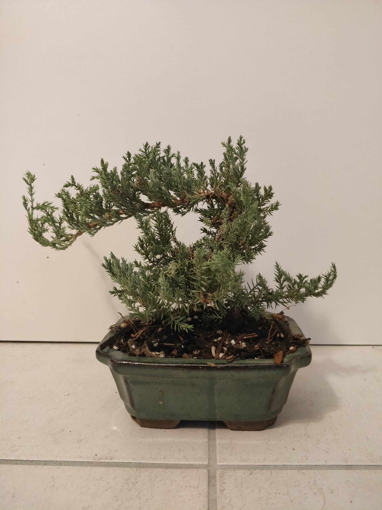 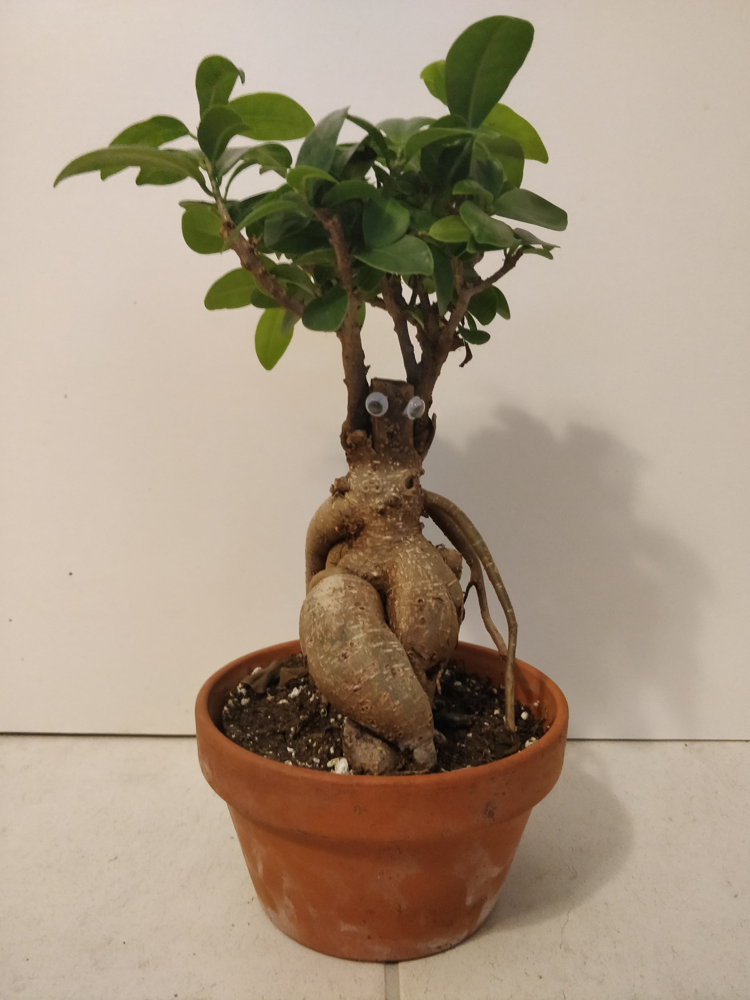Plants live and grow just like everything else, but just much slower and this I believe this is where people loose interest in them. You need to understand their needs and if you meet them, then slowly they will develop into a strong beautiful plant. This rules not only applys to plants but everything you come into contact with, if you are willing to give your time a resources to something it will flourish and become something greater than the effort you put in.
Self-Watering Plant Pot
After several months of planning and development which will be explained later in this article. This pot is completely self sustaining (as long as its plugged into the wall, and you fill its tank every couple weeks) this pot comes with many features that I will take a deeper dive into later, but to list some:
- 2 Litre water tank that can be filled and drainend with an LED pannel that shows you the water level.
- Its own Wifi network you can connect to and set watering schedules.
- A soil moister sensor to track the moisture and water if it gets too dry.
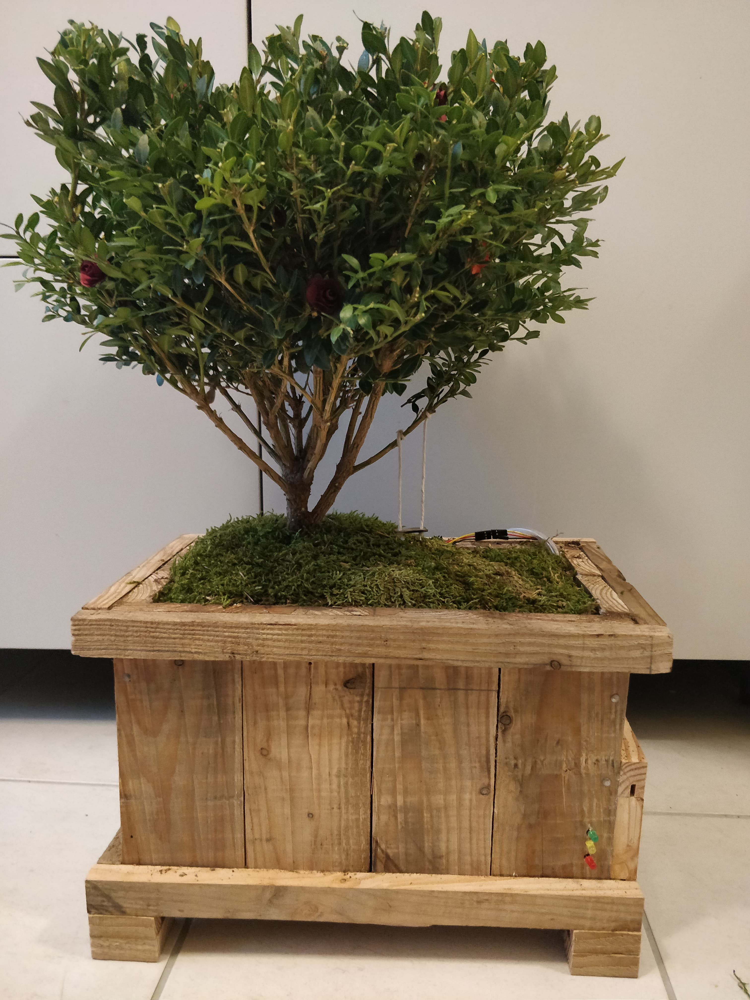 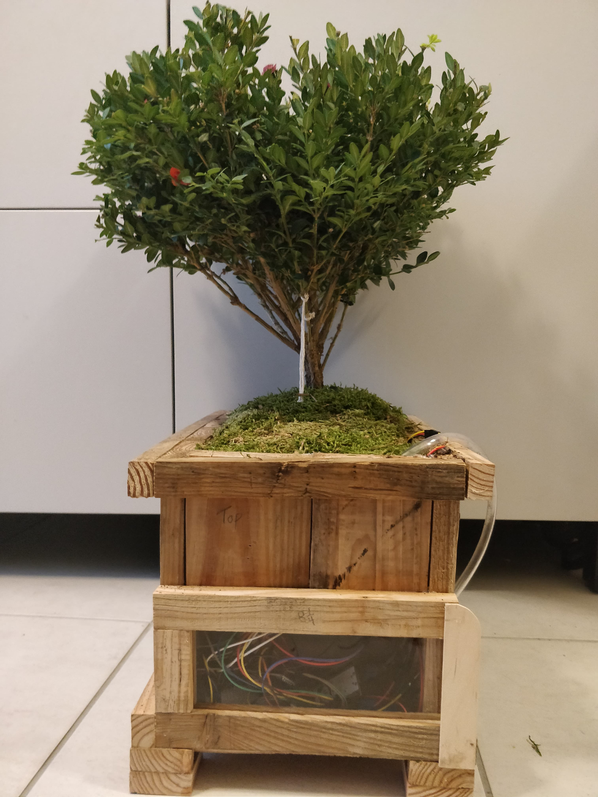Inspiration
As a Waterloo student I tend to be in a new place every 4 months, I'm like a travelling salesman but I'm not selling anything, and most of the time I'm losing money, but I'm getting a great eduation! The only part the really bothers me is having somebody take care of my plants if I have to travel far. Not only is this a lot of work for them, but there is a very high chance that not all my plants will make it because many of them are very picky and need special treatment to stay alive especially during the winter seasons. This inspired me to build a plant pot that could that allowed the plants to take care of themselves (with only a little help from others) This gave my plants a lot more independance and also gave me more freedom to travel around without having to worry too much about them
Development
The first step to creating this project was brainstorming a design and also figuring out what micro controller I should be using, My goal was to reduce the cost as much as possible, if i ever wanted to build some for friends and family. I decided on the ESP32 board becasue it came with a wifi chip so I could control the board from my phone. I then created a list of parts that I needed which included:
- Breadboard
- Water Pump
- Water Level Sensor
- Soil Moisture Sensor
- LED's
- Real Time Clock
- Relay to control pump
- Water Tank
I started by setting up the hardware and creating a simple program for the board that opened up a network that you could connect to and set variables from. The design I wanted the pot to be as small as possible because I wanted to maintain the bonsai aesthetic so I got a tank that was very short and long.
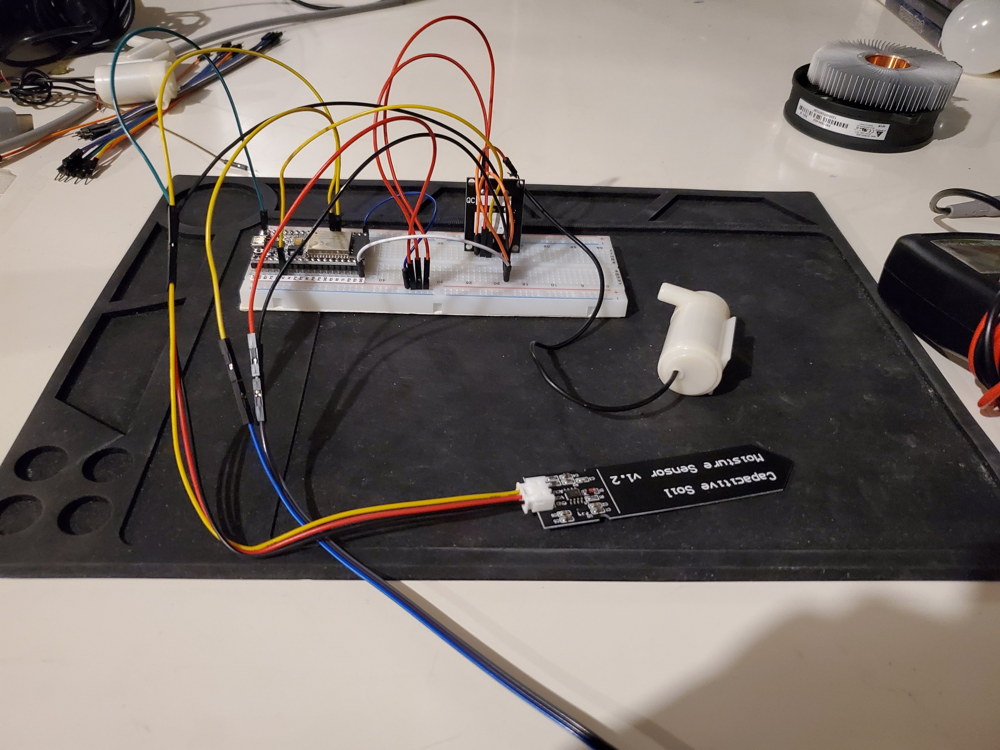 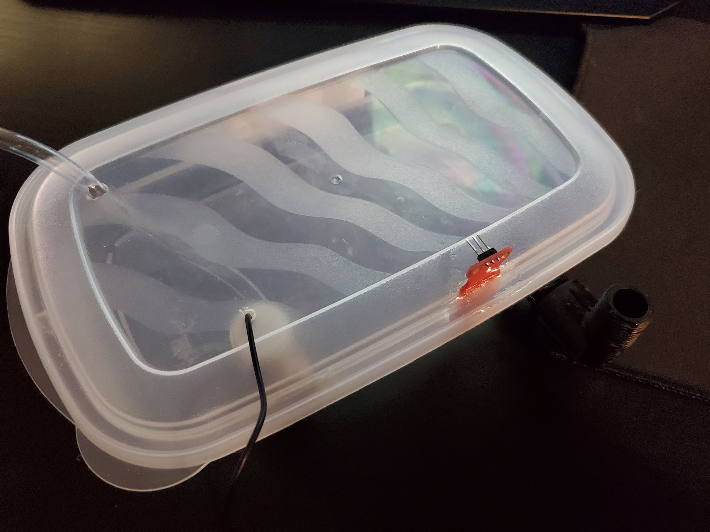Initially I created a program where the board opened up its own network and allowed you to type in the wifi name and password and it would then switch over to that network and you would be able to control it while on your normal wifi network. The issue with this was if you were to change your wifi password it would require you to re-upload the firmware because it stores the password in flash and there was no way for me to only wipe that specific variable from flash storage, and if I wanted to build one for family and friends I would need to bring it over and re-upload the firmware every time there wifi password or name changes, so I thought it out and figured the trade offs were not very good and that you only need to set up a watering schedule once so it makes sense for it to just have its own network.
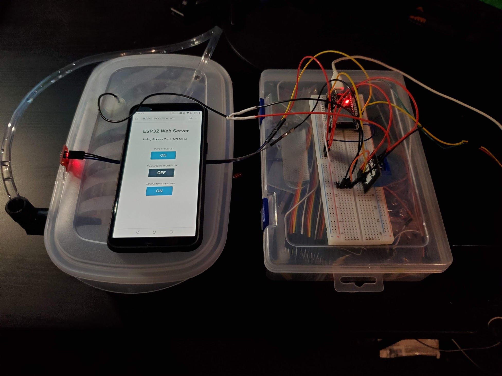 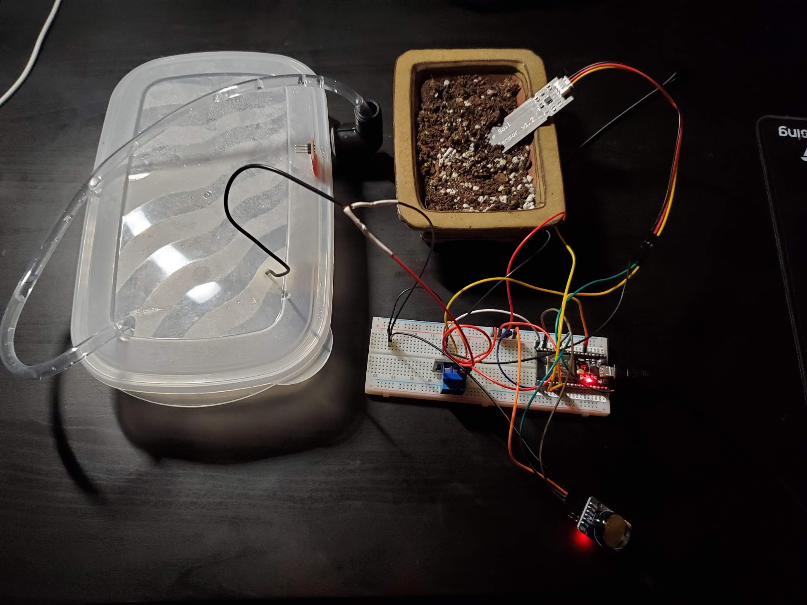Initally I didn't have a realtime clock and I was trying to figure out how I can trigger things periodically (every day) and because the program was running on a single thread I would not be able to do it because managing a wait and alos allowing other parts of the program to run would be veyr difficult so I opted towards using a reatime clock.
A major issue I had was with the pins for my soil moisture sensor not working after troubleshooting for hours I found out that once the wifi network is created the sensor readings would break, I then tested the current on the pin so see what it was before and after the wifi network turned on and the pin would drop about 0.2A which is enough for the reading to be off because it is based of of the current in the sensor, I then figured out it was only the rail connecting the wifi chip that was effected to I switched the pin I was using to one on a different rail and it started working again.
Building Box and Assembly
I wanted to make the box out of recycled wood, so I went and grabbed some old recycled skids and took them apart to use the boards for my box. because I wanted everything to be as small a possible fitting everything into to box would be a challenge. I designed how I wanted the box to look measured up the dimensions and started cutting
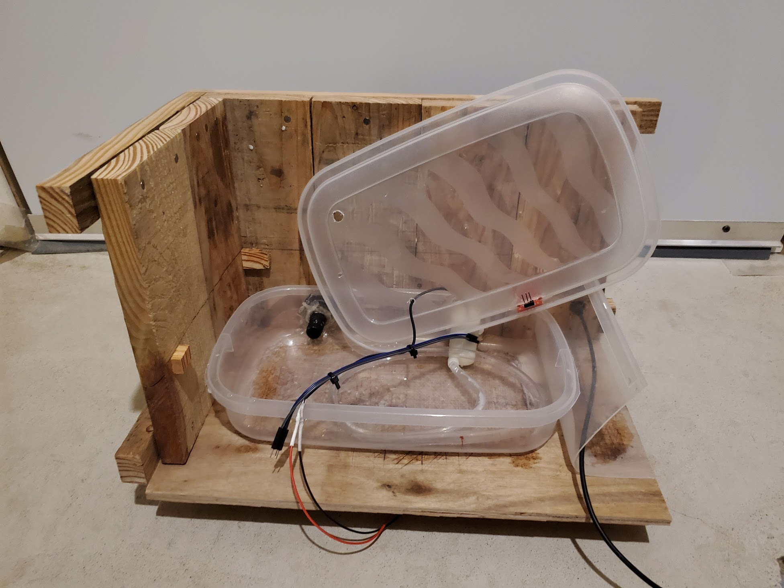 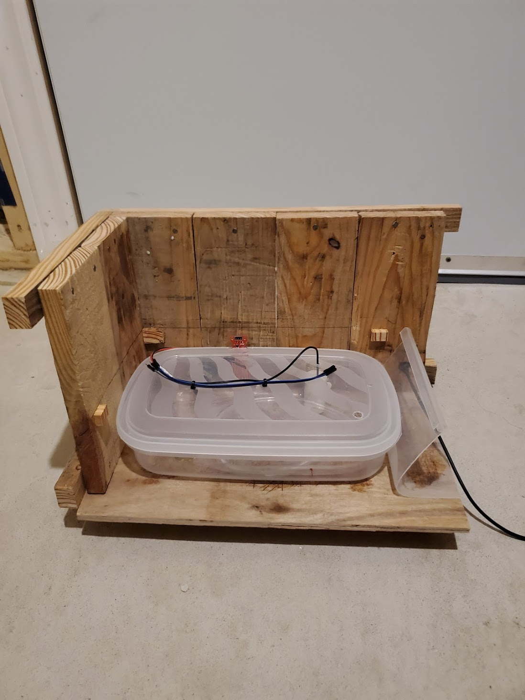WaterProofing the tank and box was very difficult and because everything was such a tight squeeze I needed to follow a specific order of building to ensure everything was finished before it was closed off and I couldn't touch it again, I ended up seating up the box with caulking glue and then sealed the soil section with flex seal, the components just fit inside the box and I created a plexiglass window that I could slide out to reset the board and get to the electronics if I needed to fix something.